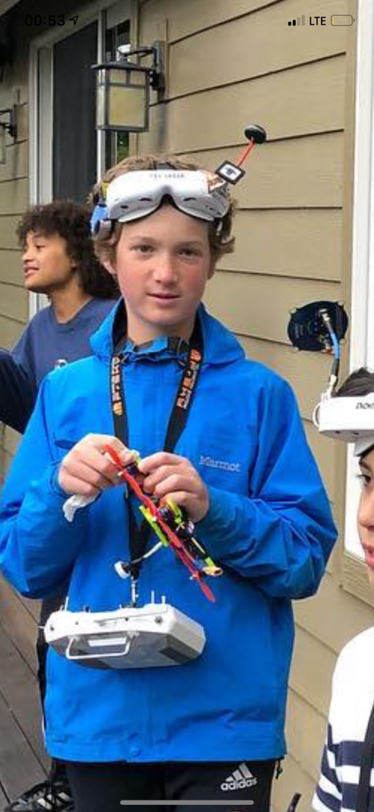

Salmon Roll
This is the first stop on our tour of the Charlie Fan Club museum. The photographer has chosen to remain unnamed. Here we can see Charlie in his natural habitat sitting on the ground. He is wearing his classic blue jacket, so we know this is a real candid shot.
Salmon Plate
At this stop we can see Charlie with his drone and his handsome goggles. With these he can see from the point of view of the drone and focus as if he were really flying.

Fish Egg Roll
The Fish Egg Roll is one of the most famous of all the dishes we serve here at Ace Sushi. Fish eggs are put along with raw fish, and served in the classic sushi roll form factor.

Ace Sushi Background
We offer fresh, high-quality sushi and fusion items by specially-trained chefs in a convenient grab-and-go packages as well as made-to-order items. Over the years, we have expanded to diverse marketplaces across the globe.
In order to continually better serve our customers, ACE is regularly introducing new items to the market. Because of ever- changing consumer, tastes and needs and our forward-thinking approach, we address specific dietary need, including Koasher, gluten-free and vegetarian option as well as a position make sustainable seafood choices.
Ace Sushi Testimonials
“As a single parent I like my children to have variety in their food choices but I don’t have a lot of time. I also don’t have a big budget. I also want to make sure that they are eating healthy. I have been coming to the sushi bar at my Crystal Lake market for a year. I love my chef, the sushi selection (Dragon Roll…mmmm) and the price. My kids love it because they feel it shows they have style. It’s a win all-around!”